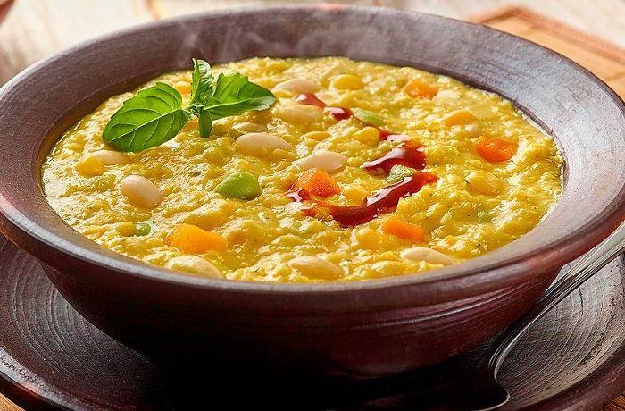

Porotos con Mazamorra

Ricos porotos
- Porotos
- Zapallo
- Aceite
- Choclos
- Cebolla
- Sal
- En una olla ponga a cocer los porotos y el zapallo cortado en trozos grandes, agregue agua hirviendo y sal y deje cocer durante 30 minutos.
- Cuando el zapallo esté cocido, retírelo de la olla y muélalo sobre un plato base y vuélvalo a incorporar a la olla de los porotos.Pele y desgrane los choclos y llévelos a una juguera y licúelos junto con las hojas de albahaca y reserve.
- En una sartén, caliente una lámina de aceite y fría la cebolla y el ajo picados en cuadros pequeños (brunoise).
Back